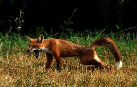

A vörös róka (Vulpes vulpes) a rókák legismertebb és egyúttal a Vulpes nem legnagyobb termetű faja. A valódi kutyaformáktól külsőleg a napvilágon tojásdad alakú pupillája, lapos szembolti íve és aránylag kicsiny felső tépőfogai különböztetik meg; életmódja többnyire magányos, míg a kutyáké inkább csapatos. Az emberek általában irtják. Mint a többi vadállatot, betegségek terjesztőjének, emellett a házi szárnyasok tolvajának tekintik. Sokan mégis kedvelik, mert pusztítják a termény kártevőit. A rókák fontosak a szőrmeipar számára is. A természetfilmek és rajzfilmek rokonszenves rókaszereplői az utóbbi időben sokat javítottak a vörös rókák megítélésén. A kutyás rókavadászat nagy hagyományú kulturális esemény volt több országban is, különösen Angliában, ahol azonban 2005 februárjától az állatvédők kampánya következtében betiltották. Prémjéért tenyésztett, háziasított formája az ezüstróka.
